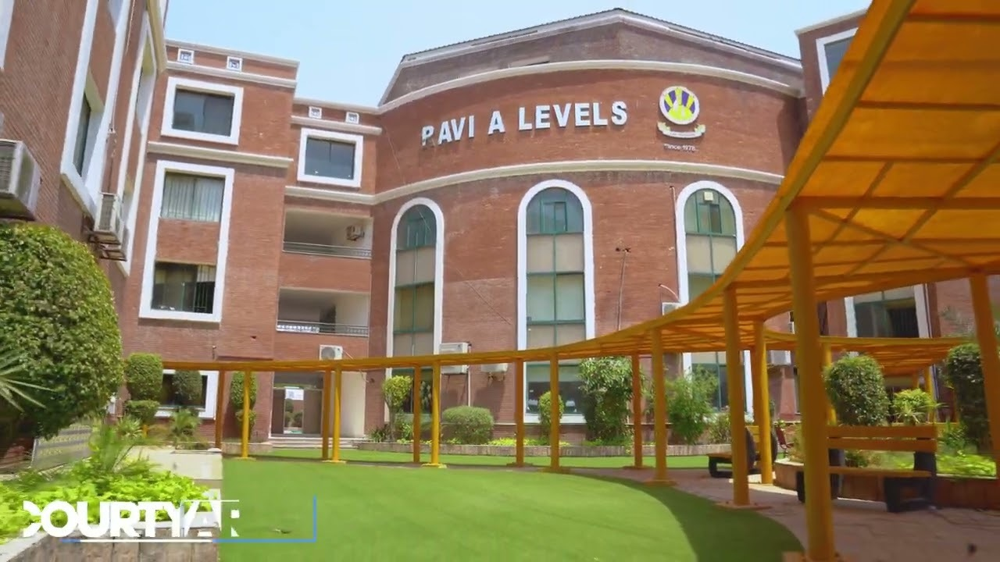
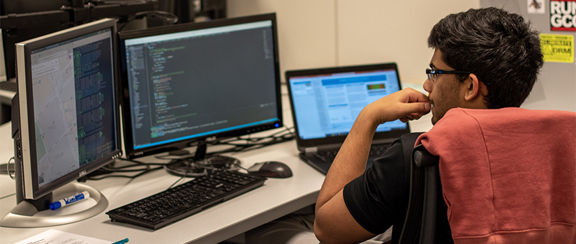

- I have completed my education from The City School Ravi Campus. I studied there for 13 years before coming to ITU for my university degree.
- I am doing my Computer Science degree, which is a 4-year-long program that will give me a lot of skills for my professional life.
- I have a strong interest in programming and find satisfaction using code to solve challenging issues. It's a fun journey..
- I also plan on doing my master's degree in the UK after completing my CS degree, which will help me land a good paying job.
- Finally, I plan to start a company and have a retirement plan by the time I am 60 years old.
- In the future, I also want to share my expertise with the IT community and work on open-source projects.


Links to social profiles: